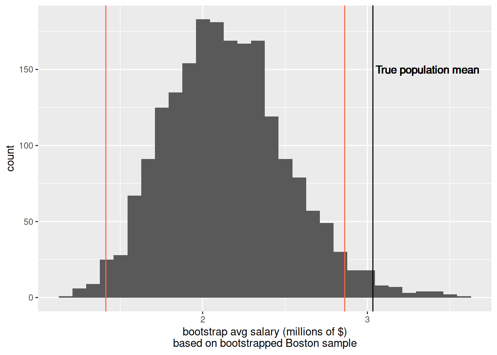

Instead of collecting data on an entire population, we often collect data on a sample drawn at random from that population.
We can compute a statistic on our sample, which we can then use as an estimate of the equivalent parameter in the population.
However… sample statistics vary from sample to sample. Using a sample statistic as an estimate of a population parameter brings an element of uncertainty.
By taking lots of samples and computing the statistic for each one, we can create a sampling distribution for that statistic. This allows us to quantify the variation in the sample statistics which is due to sampling.
The standard deviation of the sampling distribution is known as the standard error.
Finally, we saw how the size of our samples influences the sampling variation, with bigger samples leading to narrower sampling distributions, and more precise estimates.
In order to quantify the precision of our sample statistics as estimates of the population, we refer to the sampling distribution of the statistic.
Problem: in most real life research, we cannot observe the sampling distribution of a statistic. We have neither the time nor the resources to take many samples of size \(n\) in order to get an idea of how accurate an estimate is.
What can we do with only one sample?
| Solution 1 | Solution 2 (Bootstrapping) |
|---|---|
| Use the formula \(\text{SE} = \frac{\sigma}{\sqrt{n}}\), where \(\sigma\) is the standard deviation of the population, or our estimate of it (i.e., our sample standard deviation \(\hat \sigma\) or \(s\)), and \(n\) is our sample size. | Mimick the act of repeated sampling from the population by repeated resampling with replacement from the original sample. |
Bootstrapping
Random sampling with replacement from the original sample, using the same sample size.
We can mimick the act of repeated sampling of \(n\) units from the population, by resampling with replacement \(n\) units from our original sample of \(n\) units.
When we resample with replacement from our original sample enough times, the distribution of resample statistics begins to approximate the sampling distribution of the sample statistic!.
We are interested in the following question: what was the average yearly salary of a NFL player in 2015?
In this particular example, we are actually going to have access to data on the entire population, meaning that we will actually know the population parameter (the average yearly salary of NFL players in 2015). You can see these in the drop-down box below:
In most research however, the population parameter is unknown, and so we must rely on sampling.
Let’s pretend for now that we don’t know the population parameter, and are only able to collect data on a random sample of 50 players.
We would like to obtain an idea of how precise our sample mean is as an estimate of the population parameter (which we’re pretending we don’t know).
So we would like to know “if I take lots of samples of 50 players, how spread out will all the mean salaries of 50 players be?”. In other words, we want to understand properties of the sampling distribution.
We’re going answer this question via bootstrapping.
We can approximate the sampling distribution of \(\bar{x}\) (the mean salary of our sample) by:
“With replacement” simply means that as we take our sample, we replace the first item before we choose the second.. and so on.
If we resampled our 50 player sample without replacement, we would simply end up with the same 50 players, and therefore the same mean!
library(tidyverse)
nfl_sample <- read_csv("https://uoepsy.github.io/data/nflsamp.csv")nfl_sample %>%
summarise(avg_salary = mean(YearlySalary))## # A tibble: 1 x 1
## avg_salary
## <dbl>
## 1 3.52rep_sample_n().replace = TRUE:source('https://uoepsy.github.io/files/rep_sample_n.R')
rep_sample_n(nfl_sample, n = 50, samples = 1, replace = TRUE) %>%
summarise(avg_salary = mean(YearlySalary))## # A tibble: 1 x 1
## avg_salary
## <dbl>
## 1 3.89rep_sample_n(nfl_sample, n = 50, samples = 1, replace = TRUE) %>%
summarise(avg_salary = mean(YearlySalary))## # A tibble: 1 x 1
## avg_salary
## <dbl>
## 1 3.36and so on…
If we resample with replacement from our original sample enough times, then the distribution of all the means of these resamples begins to approximate the sampling distribution.
We can speed up this process by getting R to take many resamples for us, in the same way that last week we asked it to take many samples from a population at the end of the previous semester, using rep_sample_n() and group_by():
rep_sample_n(nfl_sample, n = 50, samples = 2000, replace = TRUE) %>%
group_by(sample) %>%
summarise(avg_salary = mean(YearlySalary))## # A tibble: 2,000 x 2
## sample avg_salary
## <dbl> <dbl>
## 1 1 4.79
## 2 2 4.97
## 3 3 4.42
## 4 4 3.09
## 5 5 3.96
## 6 6 3.99
## 7 7 4.47
## 8 8 2.54
## 9 9 2.89
## 10 10 4.66
## # … with 1,990 more rowsThe above line of code takes 2000 samples of size 50, by sampling with replacement from our original sample of size 50. It then summarises it by each of these resamples (the 1st 50, 2nd 50, 3rd 50 etc), calculating the mean for each one.
This set of resample means is the bootstrap distribution.
We can plot them:
bootstrap_dist <-
rep_sample_n(nfl_sample, n = 50, samples = 2000, replace = TRUE) %>%
group_by(sample) %>%
summarise(avg_salary = mean(YearlySalary))
ggplot(bootstrap_dist, aes(x = avg_salary)) +
geom_histogram() +
labs(x = "resample mean")Where do you think that this histogram is centred?
Last semester we looked at the standard error (the standard deviation of the sampling distribution). The boostrap distribution is an approximation of the sampling distribution.
TRUE or FALSE: The standard deviation of the bootstrap distribution is an approximation of the standard error of \(\bar{x}\).
Now let’s think more generally about what we did there…
The tool below may help to conceptualise these steps:
Spend 10 minutes changing things such as the sample size. If you have any questions about what is happening, then please ask either now or during the lab.
source: https://web.archive.org/web/20160807193104/http://wise1.cgu.edu/vis/bootstrap/
Figure 1: Bootstrap resampling distribution based on 2000 resamples
Roughly, between what two values do most of the resample means lie?
Confidence intervals simply answer more exactly where “most” sample means lie - they give us a range of plausible values for our population parameter.
To construct a confidence interval, we need two things:
We have the latter, in the form of our bootstrap distribution. The confidence level, instead, needs to be set by us. For instance, we might ask between which values the middle 95% (or 90%, or 80%, etc.) of our distribution falls. In other words, the confidence level is the “success rate”: the proportion of all samples whose intervals contain the true parameter.
If we were to do this whole process over and over again:
Then about 95% of the confidence intervals we created would contain the population mean.
So if we did this 100 times, we would expect about five of our 95% confidence intervals to not contain the true population mean.
And if we had been constructing 80% confidence intervals instead, we would expect roughly 80 of them to contain the population mean.
We can construct confidence intervals using the standard error. However, we cannot compute standard errors from just one sample, so we need to estimate the standard error of a statistic using either bootstrap, or the formula approach.
We also use the following rules of thumb:
If the distribution is symettric and bell-shaped…
We have our sample mean, and we can calculate the standard deviation of our bootstrap distribution (to approximate the standard error of the sample mean). We therefore have all the information we need to calculate, for instance, a 95% confidence interval - it is \(1.96 \times \text{standard error}\) above and below our mean.
Formally, we can write this 95% interval as:
The bootstrap standard error is just the standard deviation of the bootstrap distribution which we generated:
sd(bootstrap_dist$avg_salary)## [1] 0.6511474So the 95% confidence interval would be the mean of our original sample, plus or minus 1.96 times the bootstrap SE.
mean(nfl_sample$YearlySalary) - 1.96*sd(bootstrap_dist$avg_salary)## [1] 2.241011mean(nfl_sample$YearlySalary) + 1.96*sd(bootstrap_dist$avg_salary)## [1] 4.793509Does this interval contain the true population parameter? The answer is yes, 95 out of 100 times it will.
Recall the formula for the standard error: \(\text{SE} = \frac{\sigma}{\sqrt{n}}\), where \(\sigma\) is the standard deviation of the population, or our estimate of it (i.e., our sample standard deviation \(\hat \sigma\) or \(s\)), and \(n\) is our sample size.
This will therefore be our estimate of the standard error:
sd(nfl_sample$YearlySalary) / sqrt(50)## [1] 0.652454And this will be our 95% confidence interval:
mean(nfl_sample$YearlySalary) - 1.96*(sd(nfl_sample$YearlySalary) / sqrt(50))## [1] 2.23845mean(nfl_sample$YearlySalary) + 1.96*(sd(nfl_sample$YearlySalary) / sqrt(50))## [1] 4.79607Population. The entire collection of units of interest.
Sample. A subset of the entire population.
Parameter. A fixed but typically unknown quantity describing the population.
Statistic. A quantity computed on a sample.
Sampling distribution. The distribution of the values that a statistic takes on different samples of the same size and from the same population.
Standard error. The standard error of a statistic is the standard deviation of the sampling distribution of the statistic.
Resample. To sample again from your original sample
Bootstrapping. Repeated random sampling with replacement
Bootstrap distribution. The distribution of statistics calculated on random resamples. Approximates the sampling distribution of the sample statistic.
Confidence interval (CI). A range of plausible values around an estimate (e.g., a sample statistic), taking into account uncertainty in the statistic (e.g., sampling variability)
Confidence level. The percentage of confidence intervals which will contain the true population parameter in the long run (i.e., if you sampled the population and constructed confidence intervals many times over). The proportion of all samples whose intervals contain the true parameter.
Remember you will need to “source” the rep_sample_n() function into your environment.
Paste this code and make sure it appears in the top-right pane of RStudio.
source('https://uoepsy.github.io/files/rep_sample_n.R')The following code chunk reads in a sample of the Hollywood movies data we saw last week.
hollywood_sample <- read_csv("https://uoepsy.github.io/data/hollywoodsample1.csv")This week, we’re interested in the average Rotten Tomatoes rating for all Hollywood movies between 2007 and 2013.
What is our best estimate of this with the data we just read in?
Generate 2000 bootstrap resamples to create the bootstrap distribution. Store it as an object in R with the name hollywood_bs.
Estimate the standard error of the sample statistic from your bootstrap distribution.
Compute the 95% confidence intervals around our estimate of the average Rotten Tomatoes rating, and plot the bootstrap distribution and the confidence interval.
Hint: geom_vline().
Here is a new sample, but this time it contains 50 movies. Do the same (estimate the mean and construct a confidence interval). How does the confidence interval differ from the one created for a sample of 25?
hollywood_sample2 <- read_csv("https://uoepsy.github.io/data/hollywoodsample2.csv")
Using the formula approach for the standard error, construct 95% and 99% confidence intervals around the mean Rotten Tomatoes rating based on the sample of 50 movies.
Given that for the 99% confidence interval we will have greater confidence that it will contain the true population parameter than the 95% confidence interval, do we expect the range to be bigger or smaller?
Scroll back up - what was the population mean yearly salary for all NFL players at the beginning of 2015?
A researcher lives in Boston. They want to estimate salaries of NFL players, and in 2015 they go around and ask 50 players about their yearly salaries.
The code below reads in the sample they collected.
nfl_boston <- read_csv("https://uoepsy.github.io/data/nflboston.csv")Compute the sample mean, and calculate 95% confidence intervals via bootstrap standard error
This confidence does not include the population mean of 3.03. Why not?
ggplot(nfl_bs, aes(x=avg_salary)) +
geom_histogram() +
labs(x = "bootstrap avg salary (millions of $)\nbased on bootstrapped Boston sample") +
geom_vline(xintercept = mean(nfl_pop$YearlySalary))+
geom_text(x=3.05, y=150,label="True population mean",hjust=0)+
geom_vline(xintercept = c(mean(nfl_boston$YearlySalary) - 1.96 * sd(nfl_bs$avg_salary), mean(nfl_boston$YearlySalary) + 1.96 * sd(nfl_bs$avg_salary)), col="tomato1")
Hint: Look at your data, and think about what you know about how it was collected - why might this not be a good sample?